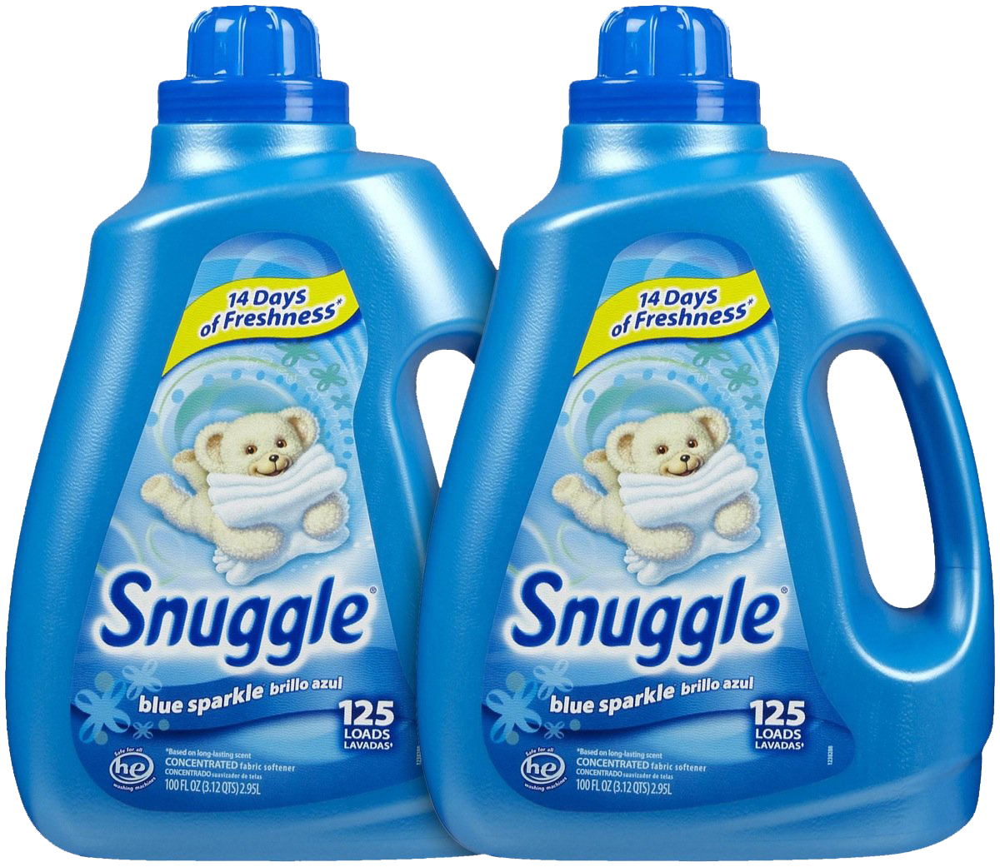
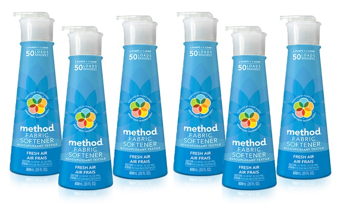

Fabric Softener

Does anyone in your family have sensitive skin? If so, stick to the products made for sensitive skin. This doesn’t have to mean that your fabric softener has to be fragrance-free however! Try Method’s baby squeaky green dryer cloths. They do exactly what they are designed to do: soften. Stick a used one in your pillow case and let the rice milk and mallow lull you to sleep.

If you’re all about the smell, try Snuggle. You are sure to find a scent you like, and will probably enjoy changing it up. They have nine different smells, from Wild Orchid Vanilla Kiss to Sweet Almond Essence. Just reading the names will make you happy.
If you don’t have to consider sensitive skin, and want your clothes to have the unmistakable smell of clean, you have to go with a liquid. A liquid’s fragrance is stronger post-laundry than any sheet.